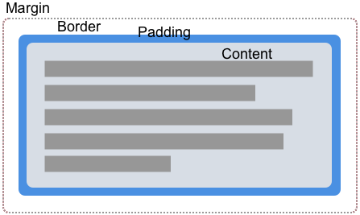

A straightforward way to create a shape is to use a value from the CSS Box Model. This article explains how to do this.
The box values allowable as a shape value are:
content-boxpadding-boxborder-boxmargin-boxThe border-radius values are also supported, this means that you can have something in your page with a curved border, and your shape can follow the created shape.
The values listed above correspond to the various parts of the CSS Box Model. A box in CSS has content, padding, border, and margin.

By using Box Values for Shapes we can wrap our content around the edges defined by these values. In all of the examples below I am using an element which has padding, a border, and a margin defined in order that you can see the different ways in which content will flow.
The margin-box is the shape defined by the outside margin edge and includes the corner radius of the shape, should {{cssxref("border-radius")}} have been used in defining the element.
In the example below, we have a circular purple item which is a {{htmlelement("div")}} with a height, width, and background color. The border-radius property has been used to create a circle by setting border-radius: 50%. As the element has a margin, you can see that the content is flowing around the circular shape and the margin applied to it.
{{EmbedGHLiveSample("css-examples/shapes/box/margin-box.html", '100%', 800)}}
The border-box value is the shape defined by the outside border edge. This shape follows all of the normal border radius shaping rules for the outside of the border. You still have a border, even if you have not used the CSS {{cssxref("border")}} property. In this case it will be the same as padding-box, the shape defined by the outside padding edge.
In the example below you can see how the text now follows the line created by the border. Change the border size and the content follows it.
{{EmbedGHLiveSample("css-examples/shapes/box/border-box.html", '100%', 800)}}
The padding-box value defines the shape enclosed by the outside padding edge. This shape follows all of the normal border radius shaping rules for the inside of the border. If you have no padding then padding-box is the same as content-box.
{{EmbedGHLiveSample("css-examples/shapes/box/padding-box.html", '100%', 800)}}
The content-box value defines the shape enclosed by the outside content edge. Each corner radius of this box is the larger of 0 or border-radius − border-width − padding. This Means that it is impossible to have a negative value here.
{{EmbedGHLiveSample("css-examples/shapes/box/content-box.html", '100%', 800)}}
Using box values is a simple way to create shapes, however this is by nature only going to work with very simple shapes that can be defined using the well-supported border-radius property. The examples shown above show one such use case. You can create a circular shape using border-radius and then curve text around it.
You can create some interesting effects however with just this simple technique. In my final example of this section, I have floated two elements left and right, giving each a border-radius of 100% in the direction closest to the text.
{{EmbedGHLiveSample("css-examples/shapes/box/bottom-margin-box.html", '100%', 800)}}
For more complex shapes you will need to use one of the basic shapes as a value, or define your Shape from an image as covered in other guides in this section.